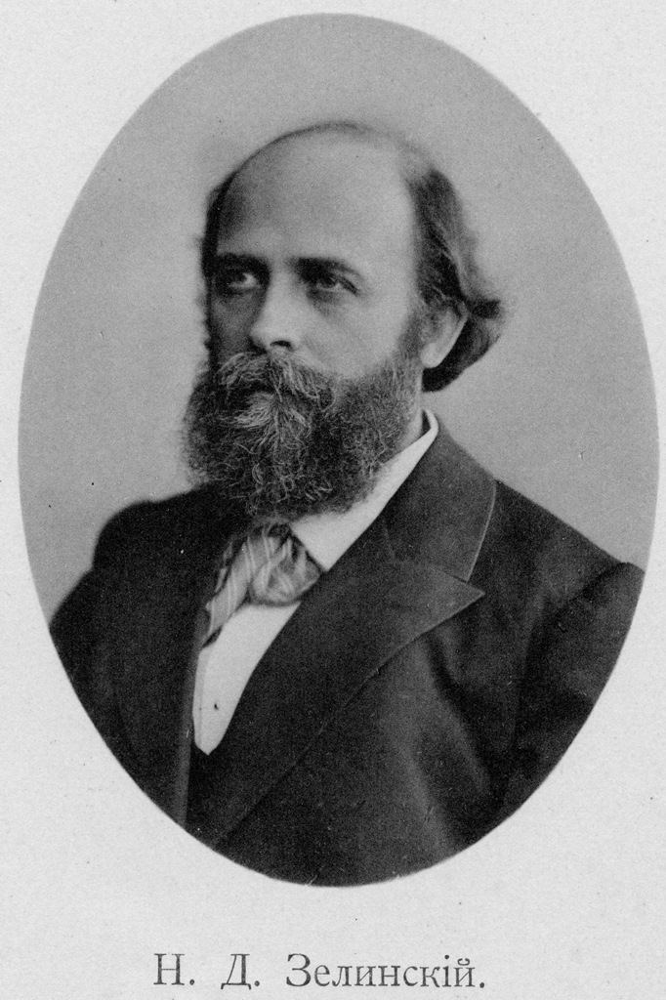
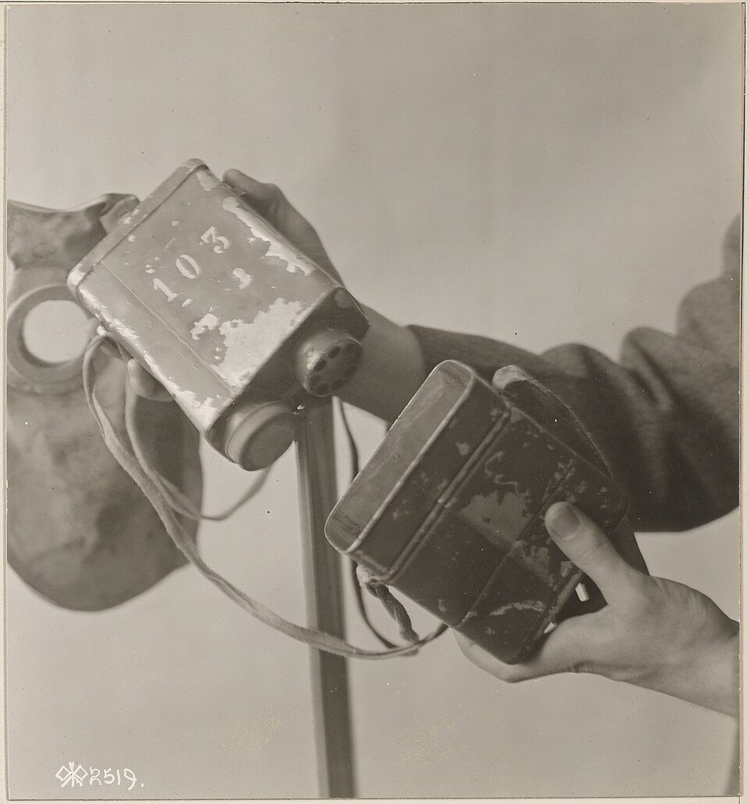

От солдатской шинели — к коробке с углём
Читается подряд. Нажми на удар — откроется подробный разбор с источниками.
Николай Зелинский родился 6 февраля 1861 года в Тирасполе. К 1915 году он был известным химиком-органиком.Узнать подробнееСвернуть
Он рано осиротел, учился в Одессе, окончил Новороссийский университет. С 1893 года заведовал кафедрой в Московском университете — по приглашению Менделеева. В 1911 году ушёл оттуда вместе с группой учёных в знак протеста против политики министра просвещения Л. А. Кассо. В Петербурге он стал заведовать Центральной химической лабораторией Министерства финансов. Она работала на спиртоводочную промышленность, и сам Зелинский называл её «кабацкой».

Н. Д. Зелинский. Портрет около 1901 года, автор неизвестен. Викисклад (по «Летописи Московского университета»), общественное достояние. Источники: Главархив Москвы, «Изобретатель угольного противогаза» (mos.ru); М. В. Супотницкий, комментарии к книге А. Н. Де Лазари «Химическое оружие на фронтах Мировой войны 1914–1918 гг.» (2008), гл. 44.
Молодым стажёром в Германии Зелинский сам отравился ядом, который в ту войну назовут ипритом.Узнать подробнееСвернуть
В 1885–1887 годах он работал в немецких лабораториях и получал там соединения ряда тиофена. Позже он вспоминал:
«В процессе работы над синтезом мною приготовлен был промежуточный продукт — дихлордиэтилсульфид, оказавшийся сильным ядом, от которого я жестоко пострадал, получив ожоги рук и тела».
Тогда на это вещество почти никто не обратил внимания. В Первую мировую войну его назовут ипритом, или горчичным газом.
Источники: Институт органической химии им. Н. Д. Зелинского РАН, «Первая мировая — война газа с противогазом» (zioc.ru); Главархив Москвы (mos.ru).
22 апреля 1915 года немцы выпустили хлор под Ипром. 31 мая хлор из баллонов пустили и на русский фронт — под Болимовом, к западу от Варшавы.Узнать подробнееСвернуть
Под Болимовом сильнее всего пострадали 217-й Ковровский и 218-й Горбатовский полки. Войска не бросили позиций, но потери от газа были тяжёлые. Солдатам раздали марлевые повязки с пропиткой из гипосульфита. Их шили благотворительные общества и гимназии по призыву принца А. П. Ольденбургского, верховного начальника санитарной и эвакуационной части. Такие маски почти не защищали. А пропитка без соды, вступая в реакцию с хлором, выделяла сернистый газ.
Источники: Н. А. Фигуровский, «Очерк развития русского противогаза во время империалистической войны 1914–1918 гг.» (М.–Л.: Изд-во АН СССР, 1942), гл. «Первый период развития русского противогаза в 1915 г.»; ИОХ РАН (zioc.ru).
Из донесений с фронта Зелинский понял: выжили те, кто дышал через шинель или рыхлую землю. Яд не связывался в них химически — он поглощался.Узнать подробнееСвернуть
Летом 1915 года газовые атаки обсуждали в Санитарно-техническом отделе Русского технического общества. Зелинский вспоминал:
«…мы решили испробовать и применять также простое средство, действие которого было бы вполне аналогично действию материи солдатской шинели или гумусу почвы. Как в том, так и в другом случае ядовитые вещества не химически связывались, а поглощались, или адсорбировались шерстью и почвой. Такое средство мы думали найти в древесном угле…»
Источник: Н. А. Фигуровский, 1942, гл. «Предложение Н. Д. Зелинского» (слова Н. Д. Зелинского).
Уголь был у него под рукой: спирт-сырец в России издавна очищали берёзовым углём.Узнать подробнееСвернуть
Лаборатория Зелинского работала со спиртом, поэтому в ней были разные сорта угля. Лучше всего газы поглощал «оживлённый» уголь: им уже очищали спирт, а потом обжигали ещё раз. Для очистки водки лучшим считался берёзовый уголь, за ним шли липовый, еловый и ольховый.
Источники: Н. А. Фигуровский, 1942; М. В. Супотницкий, 2008, гл. 44.
Опыт поставили на себе: в комнату с сернистым газом вошли люди, закрыв рот и нос платками с углём. Внутри можно было оставаться до получаса.Узнать подробнееСвернуть
В пустой комнате лаборатории сжигали серу. Когда сернистого газа становилось столько, что без защиты войти было нельзя, туда входили люди. Вся защита — носовой платок, а в нём зернёный уголь. Фигуровский пишет, что «в такой невыносимой атмосфере» можно было оставаться «в течение многих минут и до получаса». Но только если платок плотно прилегал к лицу. По рассказу Института органической химии, в комнату вошёл сам Зелинский со своими помощниками В. С. Садиковым и С. С. Степановым.
Источники: Н. А. Фигуровский, 1942; ИОХ РАН (zioc.ru).
Обычного угля не хватало: он брал мало газа. Зелинский научился его активировать — обжигать заново, чтобы раскрыть поры.Узнать подробнееСвернуть
В первых опытах Зелинского и Садикова хлороёмкость угля не превышала 5%. Поры обычного угля забиты смолами и другими продуктами обугливания дерева. Зелинский предложил два способа их очистить. По первому берёзовый или липовый уголь пропитывали спиртом или эфиром и обжигали ещё раз. По второму уголь гасили водой, снова нагревали до ярко-красного каления и оставляли «томиться» без доступа воздуха. А чтобы получить особо активный уголь — 30–40%, — пропитку и обжиг повторяли ещё один или несколько раз.
Источники: М. В. Супотницкий, 2008, гл. 44; Н. А. Фигуровский, 1942.
В сентябре 1915 года московская Экспериментальная комиссия записала: уголь предохраняет от хлора и фосгена.Узнать подробнееСвернуть
В июне 1915 года Зелинский доложил об угле противогазовой комиссии Русского технического общества в Петрограде. 12 августа он выступил в Москве, в Экспериментальной комиссии по изучению газовых отравлений. Комиссия испытывала уголь в камере с хлором и фосгеном, а 8 сентября приняла решение:
«…взятый в достаточном количестве уголь предохраняет от отравления даже при значительных концентрациях названных газов (хлора до 0,1% и фосгена до 0,025%). Способность угля поглощать все газы, его дешевизна, изобилие и доступность заставляют обратить на него особое внимание…»
Сам документ — выше, в блоке «Документ».
Источник: Н. А. Фигуровский, 1942, гл. «Предложение Н. Д. Зелинского» (текст решения Экспериментальной комиссии).
Уголь засыпали в жестяную коробку, а коробку соединили с резиновым шлемом Кумманта, инженера завода «Треугольник».Узнать подробнееСвернуть
Резиновый шлем Кумманта растягивался и закрывал всю голову, для глаз в нём были стёкла. Впервые его испытали вместе с углём в Петрограде в ноябре 1915 года. Так получился прибор, который назвали противогазом Зелинского — Кумманта. Дышали в нём через уголь в обе стороны: и вдох, и выдох шли через коробку. Клапанов у первых образцов не было.

Коробки и шлем русского противогаза. Снимок Корпуса связи армии США, январь 1918 года (111-SC-2519). Какой это образец, архив не указывает. Национальный архив США, общественное достояние. Источники: Н. А. Фигуровский, 1942, гл. «Предложение Н. Д. Зелинского»; М. В. Супотницкий, 2008, гл. 44; ВНИИМ им. Д. И. Менделеева, «Зелинский Николай Дмитриевич».
23 января 1916 года противогазы проверили на солдатах в газовой камере. В английском шлеме они выходили через секунды, а в противогазе Зелинского — больше часа.Узнать подробнееСвернуть
Испытание провели в камере Ветеринарного института в Петрограде. Сравнивали английский шлем, противогазы Горного института и противогаз Зелинского с маской Кумманта. Двадцать солдат по очереди входили в камеру с хлором и фосгеном. Во второй час солдаты в камере ещё и выполняли воинские упражнения. В английском шлеме солдаты держались от 25 секунд до минуты, в противогазах Горного института — от 25 секунд до 21,5 минуты. В противогазе Зелинского один солдат пожаловался на резь в глазах через полторы минуты, а шестеро продержались от 22 до 69 минут. Сергей Степанов (№ 9 протокола) вышел через 66 минут, и то по приказу. Весь протокол — в модели ниже.
Источник: Н. А. Фигуровский, 1942 (выписка из протокола испытания 23 января 1916 года).
Управление принца Ольденбургского всё равно заказало 3,5 миллиона противогазов Горного института, а первые 200 тысяч противогазов Зелинского — только в марте 1916 года.Узнать подробнееСвернуть
Противогаз Горного института снаряжали натронной известью. В нём тяжело дышалось, а поглотитель спекался в камень. Но его поддерживало ведомство принца Ольденбургского. В феврале 1916 года противогаз Зелинского показали царю. Летом 1916 года под Сморгонью немцы впервые применили против русских войск фосген, и противогазы Горного института не спасли. После этого их изъяли из армии. За годы войны в армию отправили больше 11 миллионов противогазов Зелинского.
Источники: Н. А. Фигуровский, 1942; М. В. Супотницкий, 2008, гл. 44; ИОХ РАН (zioc.ru); ВНИИМ им. Д. И. Менделеева.
Куммант взял патент на свою маску и получал по 50 копеек с каждой, а Зелинский не получил за уголь ни копейки.Узнать подробнееСвернуть
Генерал В. Н. Ипатьев, председатель Химического комитета, писал, что Зелинский и князь Авалов, который тоже работал над противогазом, «не получили ни одной копейки». По словам Фигуровского, Зелинский прямо заявлял, что брать деньги за спасение жизней недопустимо. 27 февраля 1916 года по требованию Генштаба пять противогазов Зелинского отправили в Лондон. Англичане долго искали в угле секретную пропитку. А потом признали: уголь чистый, без всякой пропитки.
Источники: Н. А. Фигуровский, 1942 (с цитатами из воспоминаний В. Н. Ипатьева); М. В. Супотницкий, 2008, гл. 44.